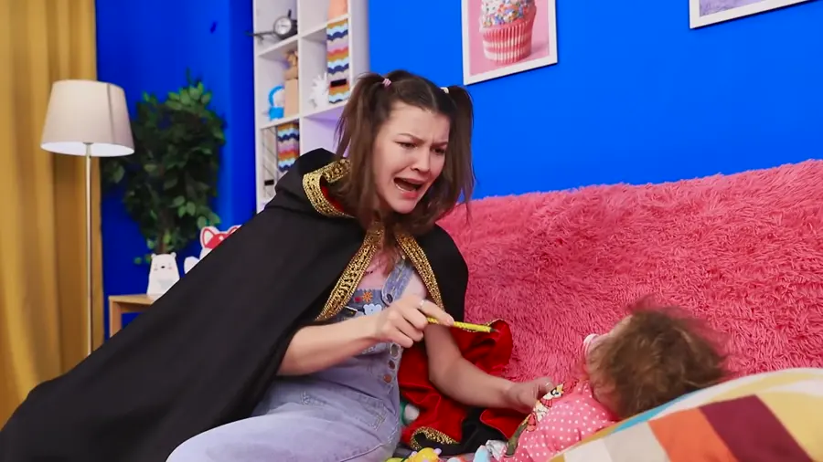

Compare on equal terms.
We reimplement video reasoning agents under shared frontier backbones and track their token use and inference cost. Most evaluated frameworks fail to improve on native video inference while often costing substantially more.
A controlled study of video reasoning agents, a deliberately simple exploration method, and an analysis of when selective viewing helps.
OVERVIEW
We evaluate existing video agents on equal terms, introduce a simpler approach, and identify when exploration helps most.
We reimplement video reasoning agents under shared frontier backbones and track their token use and inference cost. Most evaluated frameworks fail to improve on native video inference while often costing substantially more.
We introduce a minimal baseline that requests individual frames, then build SAVE on it with temporal range queries and scene-aware sampling. The baseline remains competitive with more elaborate agents. SAVE outperforms all evaluated prior agentic methods in 5 of 6 settings at substantially lower computational cost.
We show that selective exploration helps most when uniform processing would represent answer-relevant evidence too sparsely. Token-matched comparisons and a controlled synthetic-video study reveal the benefit for longer videos and brief events.
Our results across shared backbones and benchmarks. Higher performance is better; our cost comparisons measure model-side inference.
| Method | Minerva | EgoSchema | VSIBench mean |
|---|---|---|---|
| Native video | 64.8% | 75.4% | 59.2 |
| VideoLucy | 56.5% | 72.7% | 48.2 |
| DeepVideoDiscovery | 52.0% | 69.1% | 51.9 |
| A.I.R. | 55.0% | 73.9% | 49.9 |
| Scene-aware one-shot | 57.5% | 73.1% | 50.0 |
| Active exploration | 52.8% | 70.0% | 47.2 |
| SAVE | 66.4% | 76.0% | 57.1 |
| Method | Minerva | EgoSchema | VSIBench mean |
|---|---|---|---|
| Native video | 51.6% | 72.4% | 49.1 |
| VideoLucy | 58.4% | 73.2% | 43.8 |
| DeepVideoDiscovery | 52.5% | 71.5% | 49.1 |
| A.I.R. | 51.9% | 74.3% | 45.7 |
| Scene-aware one-shot | 52.5% | 70.5% | 43.5 |
| Active exploration | 52.6% | 65.3% | 45.2 |
| SAVE | 62.4% | 72.4% | 52.6 |
Selected methods from our full comparison. Minerva and EgoSchema report accuracy; VSIBench (tiny) reports the mean of its task metrics. Gemini native inference processes video and audio directly; agentic methods receive sampled frames and aligned transcripts. Full table and evaluation details ↗
SAVE scores 66.4% versus 64.8% for native video at about 40% of its cost.
Gemini 3 Flash, with native video sampling calibrated to approximately match SAVE’s per-sample input tokens. Accuracy is shown for the same valid samples within each comparison.
| Video length | n | Controlled | SAVE | p |
|---|---|---|---|---|
| <5 min | 386 | 67.36% | 66.32% | 0.776 |
| 5–15 min | 666 | 62.46% | 68.77% | 0.009 |
| ≥15 min | 328 | 54.88% | 63.72% | 0.001 |
| Overall | 1,380 | 62.03% | 66.88% | 0.0055 |
| Event share | n | Controlled | SAVE | Δ pp |
|---|---|---|---|---|
| ≤1% | 48 | 29.17% | 64.58% | +35.42 |
| 1–5% | 120 | 84.2% | 89.2% | +5.0 |
| 5–15% | 96 | 100.0% | 89.6% | −10.4 |
| >15% | 120 | 99.2% | 99.2% | 0.0 |
| Overall | 384 | 85.94% | 89.32% | +3.38 |
Event share is the duration of one answer-relevant event divided by the video duration; that event repeats throughout each synthetic video. Scene-aware one-shot sampling scores 46.1% overall. Minerva p values use video-clustered permutation tests. Percentage-point differences use unrounded scores. The controlled Minerva subset differs from the main benchmark subset. Figure 1 and Section 5 ↗
EXAMPLE WALKTHROUGHS
Choose one of three correct Minerva runs from our evaluation, then play or step through the agent’s queries, observed frames, and answer.

MINERVA / SOUND + VISUAL SEARCH
Frames are from the three separate Minerva videos at timestamps recorded in the evaluation. Each step summarizes the corresponding saved model action or observation; download all three trace records for exact model messages and frame timestamps.